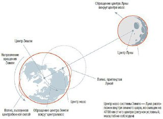

Чому в році 12 місяців?
Тому що в ньому 12 молодиків Для відліку часу люди з давніх-давен використовували повторювані природні явища і процеси. Рік, наприклад, - це час від розливу до розливу річки. А місяць - проміжок від молодика до молодика, тобто близько 29,5 сонячної доби. У рік укладається приблизно 12 таких проміжків, тому в році вважали 12 місяців. При цьому місячний рік виходить коротше сонячного. У сонячному календарі стародавніх єгиптян було 365 днів: 12 місяців по 30 днів і п'ять днів в кінці року, що не входили ні в який місяць.
Чому у Великобританії не існує об'єднаної збірної по футболу?
Це пов'язано з політико-територіального устрою Великобританії
У Великобританії існують чотири футбольні асоціації, кожна з яких відноситься до однієї з країн-автономій: Англії, Шотландії, Уельсу та Північної Ірландії. Ці чотири асоціації є найстарішими в світі і входять до Міжнародної ради футбольних асоціацій (він визначає правила гри в футбол). Об'єднаної збірної Великобританії з футболу в даний момент не існує. При цьому кожна з автономій має свою команду, свої футбольні ліги і кубки та кожна є повноправним членом ФІФА та УЄФА, а значить, може самостійно брати участь в європейських і світових змаганнях.
Більше
Втім, збірна Великобританії, що називалася «олімпійської футбольної командою Великобританії і Північної Ірландії», все ж існувала до 1972 року.
До Олімпійських ігор 2012 року збірна знову об'єдналася під керівництвом тренера Стюарта Пірса. Він міг викликати будь-якого гравця Великобританії в команду, але Шотландія, Уельс і Північна Ірландія були проти цього, оскільки побоювалися втратити свою спортивну незалежність. Після Олімпіади в Лондоні збірна знову припинила своє існування.
Чому припливи і відливи трапляються двічі на добу, хоча місяць одна?
Через відцентрової сили
Строго кажучи, не Місяць обертається навколо Землі, а обидва небесних тіла обертаються навколо загального центру мас, перебуваючи по різні боки від нього. Тяжіння Місяця створює водяний горб на зверненої до неї стороні Землі, а відцентрова сила, пов'язана з рухом Землі навколо центру мас, породжує водяний горб з протилежного боку.
Більше
По отношению к Луне эти горбы неподвижны, но из-за вращения планеты каждый из них «пробегает» за сутки по всей Земле, и вместе они вызывают два прилива и два отлива. Влияние Солнца на приливы в четыре раза слабее, так что им можно пренебречь в данном случае.

Чому нам хочеться рухатися в ритм музики?
Щоб краще її відчувати
Вичерпної відповіді на це питання немає. Відомо лише, що така реакція на ритмічну музику - вроджена, бо вона властива навіть маленьким дітям, які ніколи не бачили танцю. Мабуть, відбиваючи ритм рукою або ногою, людина краще його відчуває, точніше, вловлює його зміни. Це узгоджується з відомою гіпотезою австрійського музикознавця Ріхарда Валлашека, згідно з якою сама музика народилася як засіб координації ритмічних рухів, особливо рухів групи людей.
Чому панцир черепахи складається з шестикутників?
Завдяки осередкам такої форми він найпростіше нарощується Черепахи ростуть, і їх панцир повинен збільшуватися разом з ними, причому рівномірно по всій площі. Тому черепашачий панцир формується з окремих пластинок, щільно підігнаних один до одного, як дощечки паркету, але зберігають здатність приростати по краях. Якби пластинки могли рівномірно рости в усі сторони, вони мали б форму кіл. Однак кола не можуть щільно прилягати одне до одного, між ними неминуче будуть залишатися просвіти. Більше
Існує не так вже й багато плоских фігур, якими можна заповнити поверхню без зазорів і перекриттів. Найпростіші - три правильних багатокутника: трикутник, квадрат і шестикутник. Зростаючий ділянку навряд чи може зберігати форму квадрата або рівностороннього трикутника: формоутворення відбувається шляхом ділення і міграції клітин, а клітини «не вміють» вимірювати кути і відраховувати відстані. В цьому відношенні шестикутники - найзручніші з фігур, здатних заповнити поверхню: їхня форма найближче до кола. Вони і складають основу панцира, а пластини, що приростають з боків, «пригоняются» до них так, щоб панцир мав рівний край.
Чому деякі люди бояться собак?
Людей можна розділити на дві категорії: тих, хто обожнює собак і не уявляє свого життя без них, і тих, хто собак не любить, а частіше боїться. Чому так відбувається? Невже, на шляху одних зустрічаються добрі собаки, а інші стикаються лише з лютими псами?
«Всіх любити не можна, і смаки різні», - заперечите ви. І будете, по суті, мають рацію. Однак психологи готові запропонувати інший варіант відповіді: «Вся справа в наших дитячих страхах і фобіях». Ми ще не з'явилися на світ, а фобії і страхи вже живуть в нас.
Більше
Плод усваивает информацию еще в утробе матери, поэтому вы можете и не помнить. Когда вас напугала собака. А вот боязнь будет присутствовать, и перерасти она может в настоящую фобию. Именно поэтому беременным женщинам следует всегда иметь при себе ультразвуковой отпугиватель собак, чтобы избежать подобного стресса, который может сказаться на дальнейшей жизни маленького человечка, находящегося под сердцем.
Иметь отпугиватель для сохранения собственного психологического комфорта и обеспечения безопасности следует иметь и в том случае, если вы собираетесь в загородную поездку. Кто знает, какую встречу вам уготовила судьба? В лесу. К примеру, вы можете встретить волка или иное дикое животное. И тут уж испуг будет самым минимальным последствием данной ситуации.
Если у вас или вашего ребенка уже имеется боязнь собак, то и по улицам города лучше прогуливаться с ультразвуковым отпугивателем, чтобы не усугубить состояние. При этом необходимо обязательно обратиться к специалисту, который поможет справиться с фобией. Ведь не возможно всю жизнь жить в страхе.
В подобной ситуации полезной бывает энимелтерапия, т.е. лечение с помощью животных. Безусловно, вы не сможете сразу не бояться большой собаки, за которой вас попросит присмотреть сосед, а вот взять в семью маленького щенка будет отличным решением.
Наблюдая, как растет это крохотное четырехлапое создание, вы станете его лучше понимать и перестанете бояться. Приручив одно (столь страшное для вас) существо вы сможете перебороть страх, который таится в подсознании. Однако для подобного шага нужен серьезный настрой и твердая уверенность, что вы можете перебороть страх.
При этом также стоит принять во внимание, что собаки способны не только помогать справляться со страхами, они способны помочь в борьбе с депрессией, замкнутостью, малоподвижностью. Они прекрасные лекари и очень преданные друзья. Осознав это, вы без сомнения забудете о своей фобии.
Почему число пи так называеться?
Чому число пі так називаетПотому що грецьке слово «вимірюю навколо» починається з цієї літери
Число пі виражає відношення довжини кола до діаметру і приблизно дорівнює 3,14. Вперше його позначив грецькою буквою π англієць Вільям Джонс у праці «Огляд досягнень математики», надрукованому в 1706 році?.
Він керувався тим, що з неї починається слово περιμετρέο - «вимірюю навколо». Широке поширення це позначення отримало завдяки великому математику Леонарда Ейлера (1707-1783), який часто ним користувався. Як і коли було відкрито саме число, невідомо.
Більше
То, что отношение длины окружности к ее диаметру — число постоянное, известно с незапамятных времен. Вавилоняне в III тысячелетии до н. э. уже знали, что пи равно или чуть больше трех. Вычислить значение этого числа с точностью до трех знаков удалось лишь в III веке до н. э. Архимеду. А в XVIII веке Иоганн Ламберт доказал, что пи нельзя выразить в виде отношения двух целых чисел, то есть в виде конечной или периодической десятичной дроби. Ко времени Ламберта пи уже было вычислено с точностью до ста с лишним знаков. А осенью 2011 года была достигнута точность 10 триллионов знаков.
Чому під час снігопаду не буває грози?
Через низьку температури і вологості
Гроза виникає при електризації хмар. Коли складові їх водяні краплі висять в висхідних потоках, вони накопичують негативний заряд, а позитивний несеться вгору з повітрям. Сила висхідних потоків залежить від перепаду температур з висотою. Взимку перепад менше, оскільки приземний повітря холодніше. Крім того, влітку приповерхневих повітря вологий, і при підйомі водяні пари конденсуються, віддаючи енергію атмосфері. В результаті вологе повітря охолоджується менше, ніж сухий, і тому висхідні потоки посилюються. Краплі можуть триматися в них довше і сильніше електризуватися. І все ж зрідка грози трапляються і в зимових умовах.